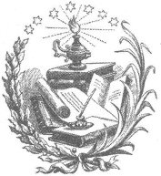

Gizem [İsa Peygamber'in kutsallığı], saçmalık için en uygun örtü olmuştur.
JOHN ADAMS
Komşumun, bir sürü tanrı olduğunu ya da hiç tanrı olmadığını söylemesinin bana hiçbir zararı yok ki. Ne cebimi deler ne de bacağımı kırar.
THOMAS JEFFERSON
Ne İncil benim kitabım ne de Hıristiyanlık benim mesleğim.
ABRAHAM LINCOLN

Her mezhep hakikatin kendi egemenliği altında olduğunu ve bundan farklı düşünenlerin de yanlış yolda olduklarını zanneder. Sisli bir havada yolculuk yapan bir adam gibi, yolda onun biraz önünde olanları sisin içinde kaybolmuş olarak görür, elbette arkasındakileri, sağında ve solunda olanlar da dahil; ancak ona yakınlaştıkça her şey berraklaşır. Aslına bakarsanız, o da en az ötekiler kadar sisin içindedir.
BENJAMIN FRANKLIN
Benim söylemem yeterli olur mu bilmiyorum ama zekâsı ve bir eğitimi olan her insan gibi ben de organik evrime inanıyorum. Bu tarihte hâlâ bu soruların soruluyor olması beni şaşırtıyor.
WOODROW WILSON (1922)
Din, sıradan insanların sessiz kalmasını sağlayacak en mükemmel araçtır.
NAPOLÉON BONAPARTE
Dünya benim ülkemdir; dinim de iyi şeyler yapmaktır.
THOMAS PAINE
Yirmi yıl boyunca özgürlük için dua ettim, ama ayaklarımla dua etmeye başlayana kadar tek bir yanıt bile alamadım.
FREDERICK DOUGLASS[2]
Duyduğum her yanlış düşüncede kiliseden çıkmam gerekseydi, orada beş dakikadan fazla kalamazdım.
RALPH WALDO EMERSON
Benim, batıl inançları olan biri olduğumu mu düşünüyorsunuz? Ben batık inançlı bir ateistim.
MOHANDAS K. GANDHI
Yığınların açlık, pislik ve cahillik içinde yaşamaktan memnuniyet duymalarını sağlamakla uğraşan dinlerle hiçbir ilgim olsun istemem. İnsanlara, bu dünyada daha mutlu ve daha çağdaş olabilme; kendi kaderinin sahibi, kendi ruhunun kaptanı olarak gerçek bir insan olabilme kapasitesine sahip olduklarını öğretmeyen hiçbir yasa, din ya da benzer şeyle işim olsun istemem.
JAWAHARLAL NEHRU
Avrupa zekâsının her adımı, ruhban sınıfına rağmen atılmıştır.
VICTOR HUGO
Şekli ne olursa olsun yüce bir gücün, insan işleriyle ilgilendiğini düşünmek saçmadır. Sizce de böyle kasvetli ve karmaşık bir sorumluluk onu kirletmez miydi?
YAŞLI PLINY[3]
Dinden nefret edenler ürememeli, tabii vergiden muaf tutulmayacaklar.
JAMES A. MICHENER
Organize din, siyaseti Hıristiyanlaştırmak yerine Hıristiyanlığı siyasi hale getiriyor.
LAURENS VAN DER POST
Kilisenin siyasetten tamamen ayrılmasıyla birlikte ruhbanlığın sayısı, endüstrisi ve ahlak anlayışı ile insanların dine bağlılıkları açık bir şekilde artmıştır.
JAMES MADISON
Bütün bu musibetlerin içinde lanetleyen insanlığı
En kötüsüdür Dinin tiranlığı.
DANIEL DEFOE
Öteki dinleri hariç tutarak Hıristiyanlığı kuran kurumun, aynı şekilde öteki mezhepleri de hariç tutarak belirli bir Hıristiyan mezhebini kurabileceğini neden kimse göremiyor?
JAMES MADISON
Bir tiran, tanrıların hüküm sürdüğü bir devirde her zaman özel bir kararlılığa sahip olmalıdır. İnsanlar kural koyanın tanrı korkusu olduğuna ve tanrılara saygı gösterdiğine inanıyorlarsa, böyle kişiler tarafından haksız muamele görmekten daha az korkarlar; ve eğer tanrıların da onun arkadaşı olduğuna inanırlarsa, o zaman da onlara karşı kumpas kurmaya daha az hevesli olurlar.
ARİSTOTELES
Bir vatandaş olarak ahlaklı bir kişi olmam için "A", "B", "C" ve "D"ye inanmam gerektiğini söyleyen, bu ülkedeki siyasi vaizlerden gerçek anlamda bunaldım ve sıkıldım. Hayır, kim sanıyorlar kendilerini? Ve ahlaki inançlarını bana dayatma hakkını nereden alıyorlar? Ayrıca, Senato'daki sayımlarda beni, Tanrı tarafından kendilerine verildiğini iddia ettikleri yetkiyle kontrol edebileceğini düşünen bütün dinsel grupların tehditlerine direnmek zorunda olan bir yasa koyucu olarak çok daha kızgınım. Onları uyarıyorum: Kendi ahlaki kararlarını "muhafazakârlık" yaftasıyla bütün Amerikalılara dayatmak isteyenlerle sonuna kadar savaşacağım.
BARRY GOLDWATER
Din ihtiyacı, insanlık kendini yönetebilecek kadar akıllı olduğunda sona erecek.
FRANCISCO FERRER GUARDIA